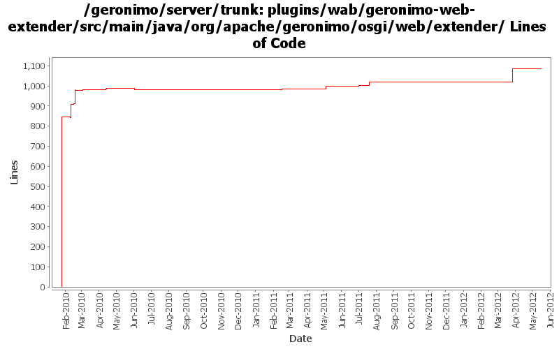

[root]/plugins/wab/geronimo-web-extender/src/main/java/org/apache/geronimo/osgi/web/extender

| Author | Changes | Lines of Code | Lines per Change |
|---|---|---|---|
| Totals | 37 (100.0%) | 1233 (100.0%) | 33.3 |
| gawor | 20 (54.1%) | 1170 (94.9%) | 58.5 |
| xuhaihong | 2 (5.4%) | 55 (4.5%) | 27.5 |
| genspring | 2 (5.4%) | 5 (0.4%) | 2.5 |
| djencks | 1 (2.7%) | 3 (0.2%) | 3.0 |
| xiaming | 4 (10.8%) | 0 (0.0%) | 0.0 |
| rickmcguire | 8 (21.6%) | 0 (0.0%) | 0.0 |
Merge 1333350,1333352,1334031,1334300,GERONIMO-6345,GERONIMO-6348 into trunk
0 lines of code changed in 4 files:
GERONIMO-6311: Wait for web bundles to initialize fully before allowing application update to avoid a deadlock
91 lines of code changed in 1 file:
GERONIMO-6084: Option for deploying WABs synchronously
19 lines of code changed in 1 file:
GERONIMO-6042: do wab deploy under ConfigurationManager lock - to ensure the locks are obtained in the same order
9 lines of code changed in 1 file:
GERONIMO-5938 Load JSF taglib xml files from bundles
22 lines of code changed in 1 file:
GERONIMO-5769 use OSGi API to operate WAB in portlet, suggestion from Jarek.
3 lines of code changed in 1 file:
GERONIMO-5769 Web Application Bundles (WABs) do not show up in admin console
2 lines of code changed in 1 file:
copy legal files from 3.0-M1 release as a base and backport mini-server pom changes
0 lines of code changed in 4 files:
GERONIMO-5025, GERONIMO-5117. Make jndi supported directly by Modules and straighten out which contexts are shared when.
3 lines of code changed in 1 file:
merge in header file changes from M1
0 lines of code changed in 4 files:
GERONIMO-5253: Publish application name to JNDI (java:app/AppName)
3 lines of code changed in 1 file:
GERONIMO-5232: Support @Resource.lookup for env-entry, resource-ref, resource-env-ref, and message-destination-ref. Also fixes java:app jndi namespace
5 lines of code changed in 1 file:
GERONIMO-4909 The changes just remove the bundle if we unload the car from ConfigurationManager
33 lines of code changed in 1 file:
avoid NPE
6 lines of code changed in 1 file:
avoid deadlock
6 lines of code changed in 1 file:
GERONIMO-5030: Start tracking WABs only after all plugins have been started. Also, throw nicer exception if there are no web module builders present to deploy the WAB
74 lines of code changed in 3 files:
GERONIMO-5030: make sure not to redeploy queued web apps on extender shutdown
17 lines of code changed in 1 file:
GERONIMO-5030: Add support for collision detection and automatic redeploy
91 lines of code changed in 2 files:
add deployed and colliding bundle to the collision list
1 lines of code changed in 1 file:
COLLISION property should be set to contextPath
1 lines of code changed in 1 file:
still need to send out deploying event if collision is detected
1 lines of code changed in 1 file:
GERONIMO-5030: move extender into its own package
846 lines of code changed in 4 files: